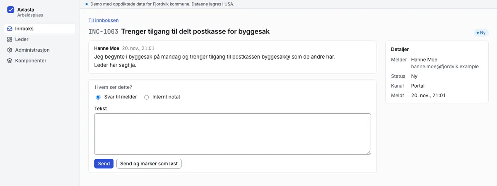

Servicedesk for kommuner og IKT-samarbeid
En servicedesk som skal ta unna det rutinemessige
Avlasta er en norsk servicedesk under bygging. Målet er at systemet sorterer, svarer på og etter hvert utfører de vanlige sakene, så folkene deres får tid til det som krever et menneske. Det som finnes i dag, kan du prøve selv.
Ingen registrering. Demoen viser Fjordvik kommune, som er oppdiktet.

Dette kan du prøve nå, og dette kommer
De fem hverdagstingene er i demoen: melde sak, innboks og saksbilde, e-post inn og ut, svar før saken sendes, og forslag fra AI. Listen oppdateres når noe nytt kommer i demoen.
- Melde sak i portalenI demoen nå
Ansatte melder saken fra mobil eller PC med en kort beskrivelse, får saksnummer med en gang og følger saken under «Mine saker».
- Svar før saken sendesI demoen nå
Portalen viser vanlige svar fra kunnskapsbasen og kjente feil før den ansatte sender saken.
- Innboks og saksbildeI demoen nå
Saksbehandleren ser nye, egne og ventende saker med frist, svarer melderen eller skriver internt notat, og løser saken.
- E-post inn og utI demoen nå
En e-post blir sak på sekunder, og svarene går ut som e-post. I demoen går alt til en demopostkasse, så ingen e-post sendes ut.
- Forslag fra AII demoen nå
Forslag til sortering, oppsummering og svar i saken. Språkmodellen Claude lager dem når AI svarer, ellers faste regler, og merket på forslaget sier hvilken. Saksbehandleren bestemmer.
- Rapporter til ledelsenI demoen nå
Lederflaten viser saker inn og løst, frister, åpne saker per kø og en ukesrapport.
- Bokmål, nynorsk og engelskI demoen nå
Portalen og arbeidsplassen kan brukes på alle tre språkene.
- VerdiregnskapDelvis
Lederflaten viser hvor mye av sakene Avlasta kunne tatt. Hvor mye tid systemet faktisk tok unna, kommer.
- AI som utfører vanlige oppgaverKommer
For eksempel tilgang og passord. Du ser hva som vil skje før noe skjer, og kan angre etterpå.
- Flere kommuner i én løsningKommer
Egen portal, egne frister og egen rapport per kommune, med felles køer.
Det som er merket «Delvis», finnes bare delvis i demoen. Det som er merket «Kommer», finnes ikke i demoen ennå. Les hvordan det henger sammen
For hvem
Kommuner
Få IT-ansatte, mange arbeidsplasser og brukere som skal få hjelp på bokmål eller nynorsk.
IKT-samarbeid
Flere kommuner i én løsning, med egen portal og egen rapport per kommune. Dette kommer.
Virksomheter
En servicedesk med alt inkludert i prisen, uten moduler og AI-tillegg å kjøpe.
Åpen pris, alt inkludert
En plattformpris etter hvor mange brukere dere betjener, pluss 590 kr per saksbehandler per måned. AI og alle moduler er med. Sluttbrukere er gratis. Minste avtale er 2 990 kr i måneden.
Nytt system, åpne kort
Avlasta er nytt, og vi har ingen kunder ennå. Det skriver vi heller enn å late som. Derfor er demoen åpen, prisene åpne, og vi sier tydelig hva som finnes og hva som kommer.
Se det selv på fem minutter
Meld en sak i portalen som ansatt i Fjordvik, og åpne den samme saken som saksbehandler.